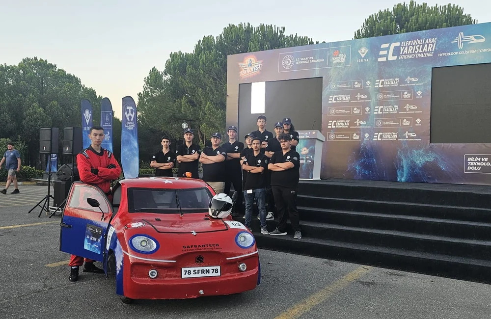
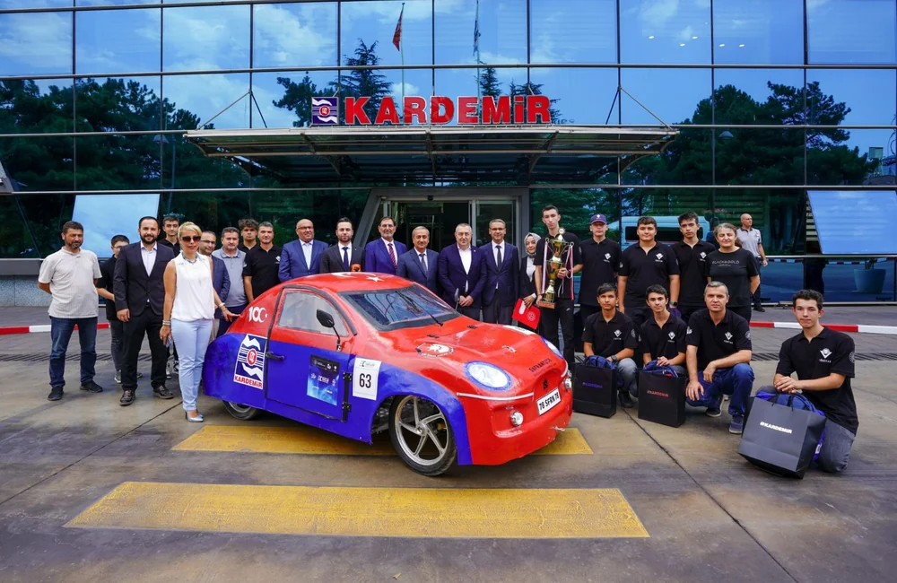

Okul içinden çıkan çok disiplinli bir teknoloji takımı
SafranTech, Safranbolu Ahi Evran Mesleki ve Teknik Anadolu Lisesi öğrencilerinin farklı teknik alanlardan bir araya gelerek oluşturduğu okul teknoloji takımıdır. Takım; bilişim, elektrik-elektronik, metal, makine ve tasarım odaklı disiplinleri bir arada çalıştırarak yarışma hazırlığı, prototip üretimi, yazılım geliştirme ve sunum süreçlerini birlikte yürütür.
Takımın temel amacı; teknolojiyi yalnızca kullanan değil, tasarlayan ve üreten öğrenciler yetiştirmektir. Bu yaklaşım doğrultusunda öğrenciler robotik, programlama, 3B tasarım, elektrik-elektronik, mekanik üretim ve takım koordinasyonu gibi alanlarda gerçek proje deneyimi kazanır.
- Bilgisayar okuryazarlığı, programlama, 3B tasarım ve web tasarımı gibi alanlar okul içi öğrenme deneyimine bağlanır.
- Takım yapısı, yalnızca yarışma sonucu değil; planlama, tasarım, test ve sunum sürecini de kapsar.
- Öğrenciler teknik becerilerini geliştirirken takım içinde sorumluluk alma ve temsil yeteneği de kazanır.
Takımı oluşturan ana disiplinler
Okulun farklı alanları, SafranTech içinde ortak hedefe göre birlikte çalışır. Bu yapı takımın projelerde daha güçlü ve sürdürülebilir olmasını sağlar.
Bilişim Teknolojileri
Yazılım, web geliştirme, veri işleme ve telemetri süreçleri.
Elektrik-Elektronik
Kontrol sistemleri, bağlantılar, donanım bütünlüğü ve enerji yönetimi.
Metal ve Makine
Şasi, gövde, montaj, parça üretimi ve mekanik dayanıklılık.
Tasarım
Görsel sunum, takım kimliği, araç ve robot estetiği, dijital içerik düzeni.
Planlama
Yarışma takvimi, görev dağılımı, raporlama ve süreç yönetimi.
Sunum & İletişim
Takımın görünürlüğünü, dijital arşivini ve kamuya açık anlatımını güçlendiren alan.
Neden SafranTech?
Misyon
Teknolojiyi üreten bireyler yetiştirmek ve öğrencilere proje odaklı gerçek deneyim kazandırmak.
Vizyon
Ulusal ve uluslararası yarışma platformlarında kalıcı iz bırakan örnek bir okul takımı olmak.
Takım Kültürü
Sorumluluk alma, paylaşma, birlikte öğrenme ve sürekli iyileştirme yaklaşımı.
Öğrenme Odağı
Her proje, öğrenciler için teknik ve kişisel gelişimi aynı anda destekleyen bir öğrenme alanıdır.

Gelişim adımları
SafranTech okul bünyesinde takım kimliği kazandı ve FRC'de çaylak sezonunu yaşayarak 2022 Bosphorus Regional tecrübesini elde etti.
Elektrikli araç ve Robotex odaklı çalışmalarla takım farklı yarışma kategorilerinde görünürlük kazandı; sağlıkta yapay zekâ ve drone alanlarında dereceler elde edildi.
SafranTech EC takımı TEKNOFEST Liseler Arası Elektrikli Araç Yarışması'nda hem ivme hem verimlilik kategorilerinde Türkiye ikinciliği elde etti.
FRC Team 8777, 2025 sezonunda Hydra adlı robotuyla Ankara Regional'da Regional Winners ödülünü aldı.